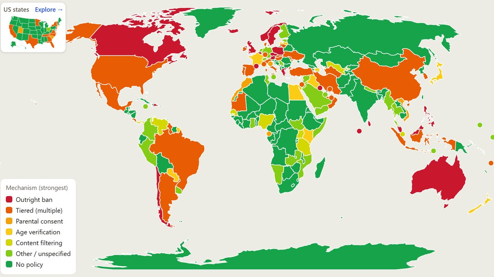
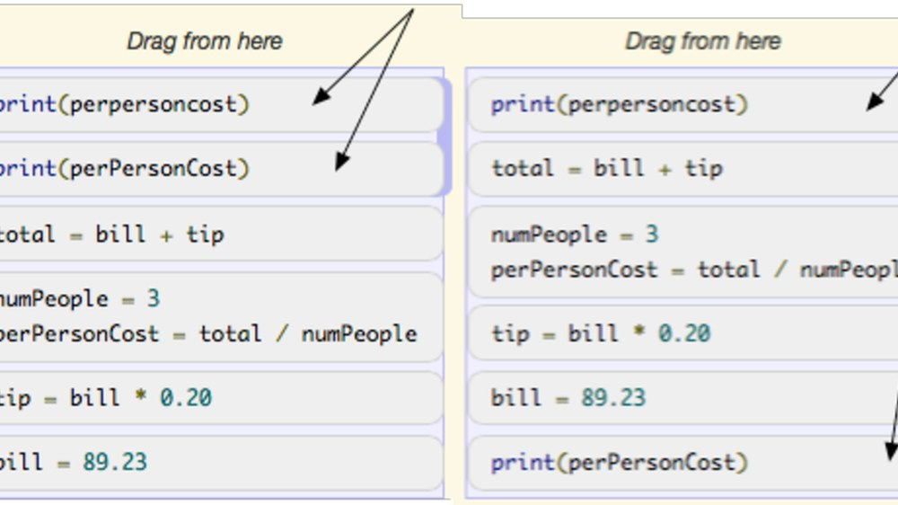

Nithin Weerasinghe
Data Science Research Fellow, U.S. Department of Veterans Affairs
Research Volunteer, CHAT Lab, Singapore Management University
I build and evaluate language technologies that turn messy human text into evidence people can trust, in clinical care, public discourse and policy.
Research interests
- Human-AI interaction
- Computational social science
- Digital mental health and well-being
- Social computing
- Natural language processing
- Human-computer interaction
M.S. in Computer Sciences, University of Wisconsin-Madison. B.S.E. in Computer Science and B.S. in Cognitive Science, University of Michigan.
Selected research
Full CVClinical notes to research data
Objective. Turn free-text clinical notes into research variables clinicians can trust, across 1.25M+ records.
Impact. Sleep-disorder cohorts built at the scale of the whole record, without manual chart review.

A live global policy dashboard
Objective. Make 130+ laws on minors' social media access across 100+ countries easy to explore and compare.
Impact. One current reference for the team's preprint, researchers and policymakers.
Public discourse during COVID-19
Objective. Measure how the public conversation about COVID-19 shifted, across 10M+ tweets.
Impact. Evidence about public attention at a scale surveys cannot reach.

Personalized practice for novice programmers
Objective. Recommend Parsons problems that match how a student is already approaching a task.
Impact. Practice that meets novices where they are.
- Manuscript in preparation, 2026
Weerasinghe, N., Razjouyan, J., Sharafkhaneh, A., & Maghsoudi, A. (2026). Automated extraction of narcolepsy and hypersomnia diagnostic metrics from clinical notes using large language models. Manuscript in preparation.
- SLEEP 2026, late-breaking abstract 1462
Weerasinghe, N., Sharafkhaneh, S., Sharafkhaneh, S., Kaleekal, C., Bandi, A., Chandler, B., Razjouyan, J., & Maghsoudi, A. (2026). Comparing bag of words and transformer models to identify MSLT reports in VA clinical notes. SLEEP 2026, late-breaking abstract. Abstract (PDF)
- SLEEP 2026, late-breaking abstract 1546
Azarian, M., Maghsoudi, A., Weerasinghe, N., Razjouyan, J., & Sharafkhaneh, A. (2026). Narcolepsy type 1 exhibits a more severe clinical and mortality phenotype than other narcolepsy in a national veteran cohort. SLEEP 2026, late-breaking abstract. Abstract (PDF)
- ATS 2026
Weerasinghe, N., Balachandran, S., Aminnia, S., Razjouyan, J., & Sharafkhaneh, A. (2026). Diverging effects of hypoxic burden on cardiovascular risk and mortality in patients with obstructive sleep apnea syndrome: A retrospective study of Veterans Affairs database. American Journal of Respiratory and Critical Care Medicine, 212(Supplement 1). Abstract
- IEEE AIxSET 2025
Maghsoudi, A., Weerasinghe, N., Sharafkhaneh, A., & Razjouyan, J. (2025). Dynamic programming optimization of LLM cascade ordering for extracting sleep parameters from mean sleep latency tests. In 2025 Conference on AI, Science, Engineering, and Technology (AIxSET) (pp. 148-151). IEEE. IEEE Xplore